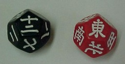
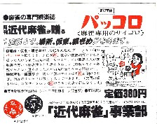

麻雀では、サイコロを２個同時に振って、開門箇所などを決める。出目は２から12まで。しかし出目は６,７が一番多い。それではイカサマがやりやすいというので、２度振りも行われる。これなら出目は４から24と倍増する。
※２度振り＝親が振った出目が７なら、７に当たる対面がもう一度振る。その出目が６なら７と６を足して１３。そこで対面の右側から１３番目を開門箇所とする。
また合計数は同じ１３でも、先に７が出るのと、先に６が出るのでは開門箇所が異なってくる。それは利点であるが、２度振りの分だけ手間がかかる。その手間を解消しようというので、30年くらい前に考案されたのが、このパッコロ。

考案したのは大脇善明という人で、実用新案も出願したという。当時、竹書房から１セット\380-で発売された。

12面体のコロが２個。一つには１から12まで、一つには東西南北が彫られている。出目は１から12までと１度振りと変わらない。しかし取り出し位置は２度振りと同じくらいに多様となる。
しかしこのパッコロ、大ぶりで重かった。どんな樹脂で出来ているか分からないけど、とにかく重い。卓の真ん中にコロコロさせればいいけれど、すこし強く壁牌にぶつかると壁牌が壊れる。そんなに強く振らなければいいようなものだが、お客さんにはいろんな人がいる。
また大ぶりなので、卓の上においてあると、ごろごろとジャマになる。そこではじめて手にしたとき、全然普及しないだろうなと思った。また実際にぜんぜん普及しなかった。たまにどこかの雀荘で見かけるだけだった。
そのうちに世の中は自動卓が全盛となった。自動卓ではバードやヘビでない限り、積み込みはできない。もちろんサイコロボックスもついている。そこでパッコロ、いまや幻の商品となってしまった。といっても、現時点では骨董的価値もほとんどない....
|